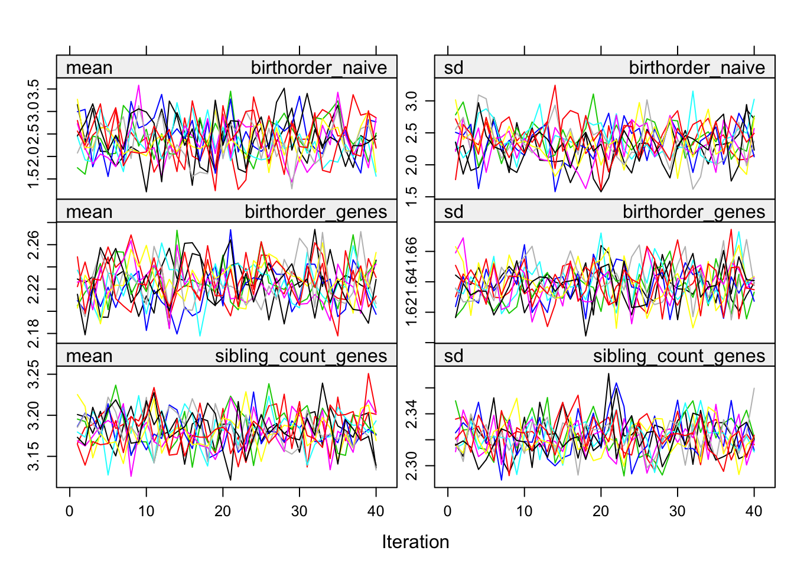
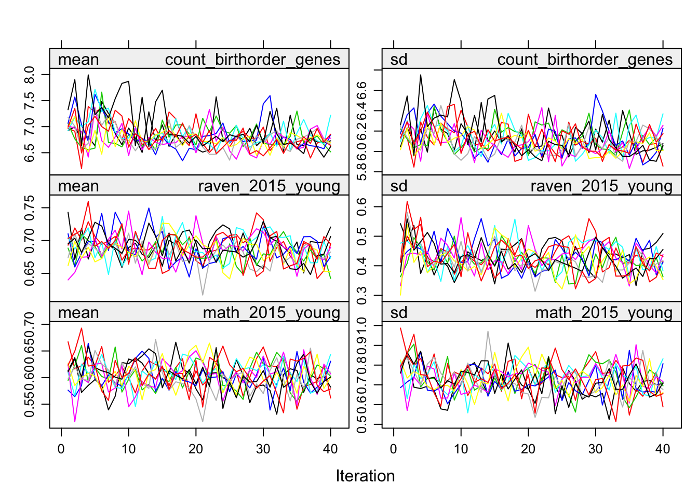
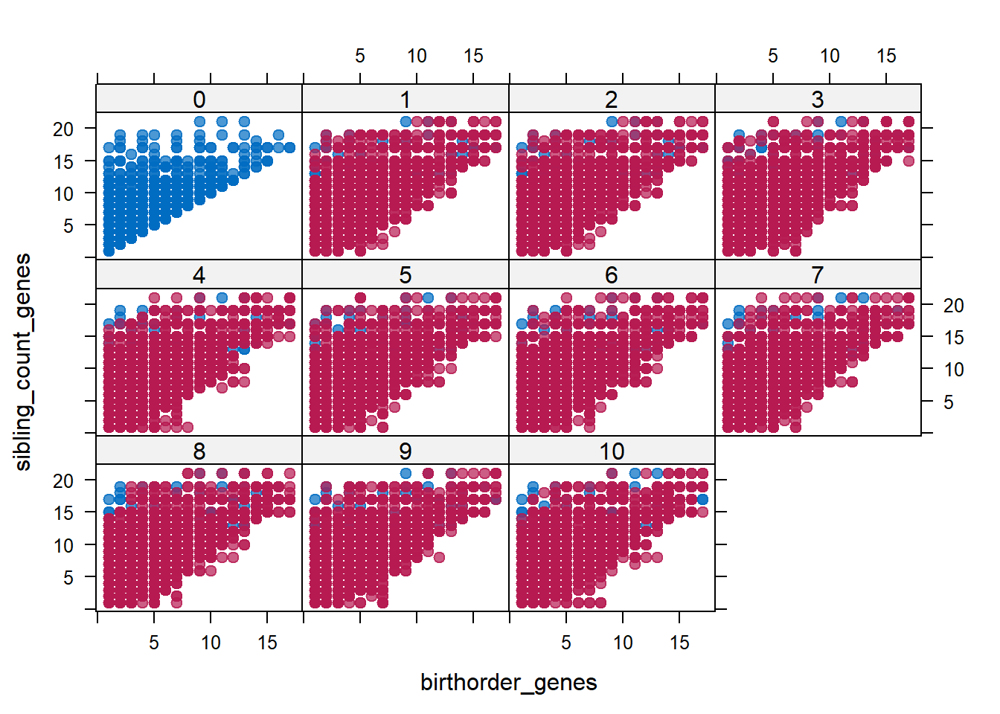
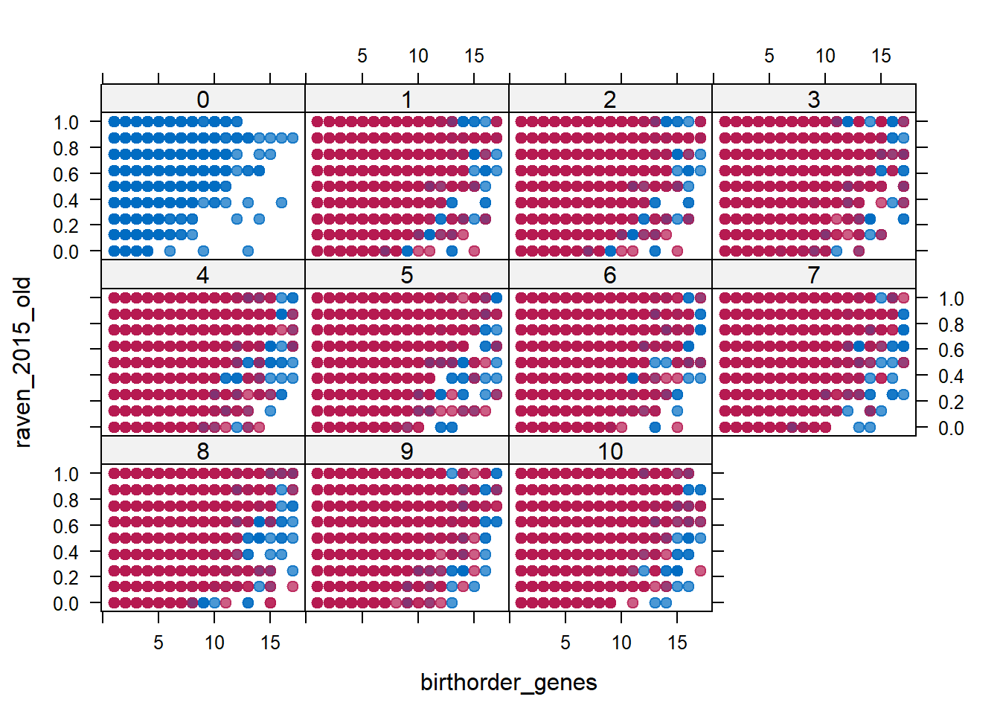

Helper
source("0_helpers.R")
## Warning: package 'rmarkdown' was built under R version 3.4.3
## Warning: package 'knitr' was built under R version 3.4.3
##
## Attaching package: 'formr'
## The following object is masked from 'package:rmarkdown':
##
## word_document
## Warning: package 'lubridate' was built under R version 3.4.3
##
## Attaching package: 'lubridate'
## The following object is masked from 'package:base':
##
## date
## Warning: package 'stringr' was built under R version 3.4.3
## Loading required package: carData
## lattice theme set by effectsTheme()
## See ?effectsTheme for details.
##
## Attaching package: 'data.table'
## The following objects are masked from 'package:lubridate':
##
## hour, isoweek, mday, minute, month, quarter, second, wday, week, yday, year
## The following objects are masked from 'package:formr':
##
## first, last
## Loading required package: Matrix
##
## Attaching package: 'lmerTest'
## The following object is masked from 'package:lme4':
##
## lmer
## The following object is masked from 'package:stats':
##
## step
##
## Attaching package: 'cowplot'
## The following object is masked from 'package:ggplot2':
##
## ggsave
## Warning: package 'haven' was built under R version 3.4.3
##
## Attaching package: 'psych'
## The following objects are masked from 'package:ggplot2':
##
## %+%, alpha
## This is lavaan 0.5-23.1097
## lavaan is BETA software! Please report any bugs.
##
## Attaching package: 'lavaan'
## The following object is masked from 'package:psych':
##
## cor2cov
## Loading required package: lattice
## Loading required package: survival
## Loading required package: Formula
##
## Attaching package: 'Hmisc'
## The following object is masked from 'package:psych':
##
## describe
## The following objects are masked from 'package:base':
##
## format.pval, round.POSIXt, trunc.POSIXt, units
## Warning: package 'tidyr' was built under R version 3.4.3
##
## Attaching package: 'tidyr'
## The following object is masked from 'package:Matrix':
##
## expand
##
## Attaching package: 'dplyr'
## The following objects are masked from 'package:Hmisc':
##
## combine, src, summarize
## The following objects are masked from 'package:data.table':
##
## between, first, last
## The following objects are masked from 'package:lubridate':
##
## intersect, setdiff, union
## The following objects are masked from 'package:formr':
##
## first, last
## The following objects are masked from 'package:stats':
##
## filter, lag
## The following objects are masked from 'package:base':
##
## intersect, setdiff, setequal, union
## Warning: package 'coefplot' was built under R version 3.4.3
Data
### Import alldata used for birthorder and g-factors computed
alldata_birthorder = readRDS("data/alldata_birthorder.rds")
alldata_birthorder_i = readRDS("data/alldata_birthorder_i.rds")
colnames(alldata_birthorder)
wave, mother_pidlink, chron_order_birth, lifebirths, multiple_birth, alive, birthdate, any_multiple_birth, marriage_id, birthorder_uterus_preg, sibling_count_uterus_preg, birthorder_uterus_alive, sibling_count_uterus_alive, birthorder_genes, sibling_count_genes, pidlink, father_pidlink, age, death_yr, death_month, sibling_count_naive_ind, any_multiple_birthdate, birthorder_naive, sibling_count_naive, age_2015_old, age_2015_young, raven_2015_young, math_2015_young, raven_2015_old, math_2015_old, words_immediate, words_delayed, words_remembered_avg, adaptive_numbering, age_2007_young, age_2007_old, raven_2007_old, raven_2007_young, math_2007_young, math_2007_old, count_backwards, g_factor_early, big5_ext, big5_con, big5_open, big5_neu, big5_agree, random_si, riskA, riskB, attended_school, highest_education, currently_attending_school, hours_in_class, years_of_education, Type_of_test_elementary, Indonesia_score_elementary, English_score_elementary, Math_score_elemenatry, Total_score_elemenatry, Type_of_test_Junior_High, Indonesia_score_Junior_High, English_score_Junior_High, Math_score_Junior_High, Total_score_Junior_High, Type_of_test_Senior_High, Indonesia_score_Senior_High, English_score_Senior_High, Math_score_Senior_High, Total_score_Senior_High, Total_score_highest, Total_score_highest_type, Math_score_highest, Math_score_highest_type, Elementary_worked, Junior_high_worked, Senior_high_worked, University_worked, total_worked, Elementary_missed, Junior_high_missed, Senior_high_missed, University_missed, total_missed, Category, Sector, Self_employed, ever_smoked, still_smoking, amount, age_first_smoke, amount_still_smokers, male, wage_last_month_log, wage_last_year_log and money_spent_smoking_log
crosstabs(alldata_birthorder$any_multiple_birth)
## For the imputation we wanted to clean the dataset and get rid of all uninteresting data
## To get the same dataset that we used for imputation thats what we have to do again:
alldata_birthorder = alldata_birthorder %>%
filter(!is.na(pidlink)) %>% # no individuals who are only known from the pregnancy file
filter(is.na(lifebirths) | lifebirths == 2) %>% # remove 7 and 2 individuals who are known as stillbirth or miscarriage but still have PID
select(-lifebirths) %>%
filter(!is.na(mother_pidlink)) %>%
select(-father_pidlink) %>%
filter(is.na(any_multiple_birth) | any_multiple_birth != 1) %>% # remove 7 and 2 individuals who are known as stillbirth or miscarriage but still have PID
select(-starts_with("age_"), -wave, -any_multiple_birth, -multiple_birth) %>%
mutate(money_spent_smoking_log = if_else(is.na(money_spent_smoking_log) & ever_smoked == 0, 0, money_spent_smoking_log),
amount = if_else(is.na(amount) & ever_smoked == 0, 0, amount),
amount_still_smokers = if_else(is.na(amount_still_smokers) & still_smoking == 0, 0, amount_still_smokers),
birthyear = lubridate::year(birthdate))
Functions needed
n_imputations.mitml = function(imps) {
imps$iter$m
}
n_imputations.mids = function(imps) {
imps$m
}
n_imputations.amelia = function(imps) {
length(imps$imputations)
}
n_imputations = function(imps) { UseMethod("n_imputations") }
complete.mitml = mitml::mitmlComplete
complete.mids = mice::complete
complete = function(...) { UseMethod("complete") }
library(mice)
## Warning: package 'mice' was built under R version 3.4.3
##
## Attaching package: 'mice'
## The following object is masked _by_ '.GlobalEnv':
##
## complete
## The following object is masked from 'package:tidyr':
##
## complete
library(miceadds)
## Warning: package 'miceadds' was built under R version 3.4.3
## * miceadds 2.9-15 (2017-12-18 11:50:04)
library(mitml)
## Warning: package 'mitml' was built under R version 3.4.3
## *** This is beta software. Please report any bugs!
## *** See the NEWS file for recent changes.
corr_pipe = . %>% as.matrix() %>%
Hmisc::rcorr(.) %>% {
left_join(left_join(.$r %>% reshape2::melt() %>% rename(r = value),
.$n %>% reshape2::melt() %>% rename(n = value), by = c("Var1", "Var2")),
.$P %>% reshape2::melt() %>% rename(p = value),
by = c("Var1", "Var2"))
} %>%
arrange(desc(r)) %>%
filter(Var1 != Var2)
alldata_birthorder_i_g_factor <- mids2mitml.list(alldata_birthorder_i)
alldata_birthorder_i_tbl = alldata_birthorder_i_g_factor %>% tbl_df.mitml.list
Correlations, iterations and density
# correlations
correlations_original = corr_pipe(alldata_birthorder %>% select_if(is.numeric))
correlations_imputed = corr_pipe(alldata_birthorder_i_g_factor[[1]] %>% select_if(is.numeric))
correlations_original = correlations_original %>%
mutate(v = paste0(Var1, Var2)) %>%
rename(Var1_original = Var1, Var2_original= Var2, n_original = n, r_original = r, p_original = p)
correlations_imputed = correlations_imputed %>%
mutate(v = paste0(Var1, Var2)) %>%
rename(Var1_imputed = Var1, Var2_imputed = Var2, n_imputed = n, r_imputed = r, p_imputed = p)
correlations = full_join(correlations_original, correlations_imputed, by = "v")
cor.test(correlations$r_original, correlations$r_imputed)
Pearson’s product-moment correlation: correlations$r_original and correlations$r_imputed
| 71.69 |
2644 |
0 * * * |
two.sided |
0.8126 |
qplot(correlations$r_original, correlations$r_imputed)
## Warning: Removed 2466 rows containing missing values (geom_point).

# plot imputation steps
name_columns = colnames(alldata_birthorder_i_tbl[[1]]) %>% as.data.frame
name_columns = name_columns[name_columns != "mother_pidlink" & name_columns != "age" &
name_columns != "any_multiple_birthdate" &
name_columns != "sibling_count_naive" &
name_columns != "male"]
pdf("imputation_steps.pdf")
plot(alldata_birthorder_i, name_columns)
dev.off()
## png
## 2
# check densities of imputed/real
pdf("density.pdf")
densityplot(alldata_birthorder_i, ~ birthorder_genes + sibling_count_genes + birthorder_naive)
densityplot(alldata_birthorder_i, ~ raven_2015_young + math_2015_young + raven_2015_old + math_2015_old + words_delayed + adaptive_numbering + count_backwards)
densityplot(alldata_birthorder_i, ~ raven_2007_old + raven_2007_young + math_2007_young + math_2007_old)
densityplot(alldata_birthorder_i, ~ big5_ext + big5_con + big5_open + big5_neu + big5_agree)
densityplot(alldata_birthorder_i, ~ random_si + riskA + riskB)
densityplot(alldata_birthorder_i, ~ attended_school + currently_attending_school + hours_in_class + years_of_education)
densityplot(alldata_birthorder_i, ~ Indonesia_score_elementary + English_score_elementary + Math_score_elemenatry + Total_score_elemenatry)
densityplot(alldata_birthorder_i, ~ Indonesia_score_Junior_High + English_score_Junior_High + Math_score_Junior_High, Total_score_Junior_High)
densityplot(alldata_birthorder_i, ~ Indonesia_score_Senior_High + English_score_Senior_High + Math_score_Senior_High + Total_score_Senior_High)
densityplot(alldata_birthorder_i, ~ Elementary_worked + Junior_high_worked + Senior_high_worked + University_worked)
densityplot(alldata_birthorder_i, ~ Elementary_missed + Junior_high_missed + Senior_high_missed + University_missed)
densityplot(alldata_birthorder_i, ~ Self_employed + ever_smoked + still_smoking + amount + wage_last_month_log + wage_last_year_log)
dev.off()
## png
## 2
# additional analyses based on van Buuren & Groothuis-Oudshoorn, 2011
xyplot(alldata_birthorder_i, birthorder_genes ~ birthorder_naive | .imp , pch = 20, cex = 1.4)

xyplot(alldata_birthorder_i, sibling_count_genes ~ birthorder_genes | .imp , pch = 20, cex = 1.4)

xyplot(alldata_birthorder_i, raven_2015_old ~ birthorder_genes | .imp , pch = 20, cex = 1.4)

G-Factor
# Normal data - no misses
no_miss = alldata_birthorder %>%
filter(!is.na(raven_2015_old), !is.na(math_2015_old), !is.na(count_backwards),
!is.na(words_delayed), !is.na(adaptive_numbering))
fa.parallel(no_miss %>% select(raven_2015_old, math_2015_old, count_backwards, words_delayed, adaptive_numbering) %>% data.frame())

## Parallel analysis suggests that the number of factors = 2 and the number of components = 1
fa(no_miss %>% select(raven_2015_old, math_2015_old, count_backwards, words_delayed, adaptive_numbering) %>% data.frame(), nfactors = 1)
## Factor Analysis using method = minres
## Call: fa(r = no_miss %>% select(raven_2015_old, math_2015_old, count_backwards,
## words_delayed, adaptive_numbering) %>% data.frame(), nfactors = 1)
## Standardized loadings (pattern matrix) based upon correlation matrix
## MR1 h2 u2 com
## raven_2015_old 0.62 0.38 0.62 1
## math_2015_old 0.51 0.26 0.74 1
## count_backwards 0.46 0.22 0.78 1
## words_delayed 0.42 0.18 0.82 1
## adaptive_numbering 0.62 0.38 0.62 1
##
## MR1
## SS loadings 1.42
## Proportion Var 0.28
##
## Mean item complexity = 1
## Test of the hypothesis that 1 factor is sufficient.
##
## The degrees of freedom for the null model are 10 and the objective function was 0.58 with Chi Square of 8539
## The degrees of freedom for the model are 5 and the objective function was 0.01
##
## The root mean square of the residuals (RMSR) is 0.02
## The df corrected root mean square of the residuals is 0.02
##
## The harmonic number of observations is 14688 with the empirical chi square 77.5 with prob < 2.8e-15
## The total number of observations was 14688 with Likelihood Chi Square = 78.47 with prob < 1.8e-15
##
## Tucker Lewis Index of factoring reliability = 0.983
## RMSEA index = 0.032 and the 90 % confidence intervals are 0.026 0.038
## BIC = 30.49
## Fit based upon off diagonal values = 1
## Measures of factor score adequacy
## MR1
## Correlation of (regression) scores with factors 0.82
## Multiple R square of scores with factors 0.67
## Minimum correlation of possible factor scores 0.35
om_results = omega(no_miss %>% select(raven_2015_old, math_2015_old, count_backwards, words_delayed, adaptive_numbering) %>% data.frame(), nfactors = 1, sl = F)
## Omega_h for 1 factor is not meaningful, just omega_t
## Warning in schmid(m, nfactors, fm, digits, rotate = rotate, n.obs = n.obs, : Omega_h and Omega_asymptotic are
## not meaningful with one factor
om_results
## Omega
## Call: omega(m = no_miss %>% select(raven_2015_old, math_2015_old, count_backwards,
## words_delayed, adaptive_numbering) %>% data.frame(), nfactors = 1,
## sl = F)
## Alpha: 0.65
## G.6: 0.61
## Omega Hierarchical: 0.66
## Omega H asymptotic: 1
## Omega Total 0.66
##
## Schmid Leiman Factor loadings greater than 0.2
## g F1* h2 u2 p2
## raven_2015_old 0.62 0.38 0.62 1
## math_2015_old 0.51 0.26 0.74 1
## count_backwards 0.46 0.22 0.78 1
## words_delayed 0.42 0.18 0.82 1
## adaptive_numbering 0.62 0.38 0.62 1
##
## With eigenvalues of:
## g F1*
## 1.4 0.0
##
## general/max 1.275e+16 max/min = 1
## mean percent general = 1 with sd = 0 and cv of 0
## Explained Common Variance of the general factor = 1
##
## The degrees of freedom are 5 and the fit is 0.01
## The number of observations was 14688 with Chi Square = 78.47 with prob < 1.8e-15
## The root mean square of the residuals is 0.02
## The df corrected root mean square of the residuals is 0.02
## RMSEA index = 0.032 and the 10 % confidence intervals are 0.026 0.038
## BIC = 30.49
##
## Compare this with the adequacy of just a general factor and no group factors
## The degrees of freedom for just the general factor are 5 and the fit is 0.01
## The number of observations was 14688 with Chi Square = 78.47 with prob < 1.8e-15
## The root mean square of the residuals is 0.02
## The df corrected root mean square of the residuals is 0.02
##
## RMSEA index = 0.032 and the 10 % confidence intervals are 0.026 0.038
## BIC = 30.49
##
## Measures of factor score adequacy
## g F1*
## Correlation of scores with factors 0.82 0
## Multiple R square of scores with factors 0.67 0
## Minimum correlation of factor score estimates 0.35 -1
##
## Total, General and Subset omega for each subset
## g F1*
## Omega total for total scores and subscales 0.66 0.66
## Omega general for total scores and subscales 0.66 0.66
## Omega group for total scores and subscales 0.00 0.00
omega.diagram(om_results)

"g_factor_nomiss =~ raven_2015_old + math_2015_old + count_backwards + words_delayed + adaptive_numbering" %>%
cfa(data = no_miss, std.lv = T, std.ov = T) -> cfa_g
summary(cfa_g)
## lavaan (0.5-23.1097) converged normally after 14 iterations
##
## Number of observations 14688
##
## Estimator ML
## Minimum Function Test Statistic 78.411
## Degrees of freedom 5
## P-value (Chi-square) 0.000
##
## Parameter Estimates:
##
## Information Expected
## Standard Errors Standard
##
## Latent Variables:
## Estimate Std.Err z-value P(>|z|)
## g_factor_nomiss =~
## raven_2015_old 0.616 0.010 63.882 0.000
## math_2015_old 0.514 0.010 53.360 0.000
## count_backwrds 0.465 0.010 48.038 0.000
## words_delayed 0.419 0.010 43.063 0.000
## adaptiv_nmbrng 0.616 0.010 63.838 0.000
##
## Variances:
## Estimate Std.Err z-value P(>|z|)
## .raven_2015_old 0.620 0.010 59.142 0.000
## .math_2015_old 0.736 0.010 70.337 0.000
## .count_backwrds 0.784 0.011 73.996 0.000
## .words_delayed 0.824 0.011 76.713 0.000
## .adaptiv_nmbrng 0.621 0.010 59.203 0.000
## g_factor_nomss 1.000
## Explained variance:
x = inspect(cfa_g, "rsquare")
no_miss$g_factor_nomiss = predict(cfa_g)[,1]
no_miss = no_miss %>% select(pidlink, g_factor_nomiss)
alldata_birthorder = left_join(alldata_birthorder, no_miss, by = "pidlink")
qplot(alldata_birthorder$g_factor_nomiss)
## `stat_bin()` using `bins = 30`. Pick better value with `binwidth`.
## Warning: Removed 24965 rows containing non-finite values (stat_bin).

# Imputed data
alldata_birthorder_i_g_factor <- within(alldata_birthorder_i_g_factor, {
g_factor_2015 <- rowMeans(scale(cbind(raven_2015_old, math_2015_old, count_backwards, words_delayed, adaptive_numbering)))
})
alldata_birthorder_i_g_factor <- within(alldata_birthorder_i_g_factor, {
g_factor_2007 <- rowMeans(scale(cbind(raven_2007_old, math_2007_old, count_backwards, words_delayed, adaptive_numbering)))
})
qplot(alldata_birthorder_i_g_factor[[1]]$g_factor_2015)
## `stat_bin()` using `bins = 30`. Pick better value with `binwidth`.

qplot(alldata_birthorder_i_g_factor[[1]]$g_factor_2007)
## `stat_bin()` using `bins = 30`. Pick better value with `binwidth`.

summary(lm(g_factor_nomiss ~ raven_2015_old, alldata_birthorder))
| -1.798 |
0.01381 |
-130.1 |
0 |
| 2.599 |
0.01889 |
137.6 |
0 |
Fitting linear model: g_factor_nomiss ~ raven_2015_old
| 14688 |
0.5429 |
0.5631 |
0.5631 |
summary(lm(g_factor_2015 ~ raven_2015_old, alldata_birthorder_i_g_factor[[1]]))
| -1.315 |
0.007102 |
-185.1 |
0 |
| 1.899 |
0.009673 |
196.3 |
0 |
Fitting linear model: g_factor_2015 ~ raven_2015_old
| 39653 |
0.4702 |
0.4928 |
0.4928 |
summary(lm(g_factor_nomiss ~ raven_2015_young, alldata_birthorder))
| -1.41 |
0.03367 |
-41.87 |
0 |
| 2.097 |
0.04143 |
50.63 |
0 |
Fitting linear model: g_factor_nomiss ~ raven_2015_young
| 5584 |
0.6084 |
0.3147 |
0.3146 |
summary(lm(g_factor_2015 ~ raven_2015_young, alldata_birthorder_i_g_factor[[1]]))
| -0.8916 |
0.01002 |
-89.01 |
0 |
| 1.228 |
0.01316 |
93.3 |
0 |
Fitting linear model: g_factor_2015 ~ raven_2015_young
| 39653 |
0.5979 |
0.18 |
0.18 |
alldata_birthorder %>% {cor.test(.$g_factor_nomiss, .$years_of_education)}
Pearson’s product-moment correlation: .$g_factor_nomiss and .$years_of_education
| 67.47 |
14435 |
0 * * * |
two.sided |
0.4896 |
alldata_birthorder_i_g_factor[[1]] %>% {cor.test(.$g_factor_2015, .$years_of_education)}
Pearson’s product-moment correlation: .$g_factor_2015 and .$years_of_education
| 119.3 |
39651 |
0 * * * |
two.sided |
0.514 |
alldata_birthorder %>% {cor.test(.$g_factor_nomiss, .$Math_score_elemenatry)}
Pearson’s product-moment correlation: .$g_factor_nomiss and .$Math_score_elemenatry
| 14.5 |
3158 |
3.823e-46 * * * |
two.sided |
0.2498 |
alldata_birthorder_i_g_factor[[1]] %>% {cor.test(.$g_factor_2015, .$Math_score_elemenatry)}
Pearson’s product-moment correlation: .$g_factor_2015 and .$Math_score_elemenatry
| 65.5 |
39651 |
0 * * * |
two.sided |
0.3125 |
alldata_birthorder %>% {cor.test(.$g_factor_nomiss, .$Total_score_elemenatry)}
Pearson’s product-moment correlation: .$g_factor_nomiss and .$Total_score_elemenatry
| 6.537 |
3193 |
0.00000000007278 * * * |
two.sided |
0.1149 |
alldata_birthorder_i_g_factor[[1]] %>% {cor.test(.$g_factor_2015, .$Total_score_elemenatry)}
Pearson’s product-moment correlation: .$g_factor_2015 and .$Total_score_elemenatry
| -6.022 |
39651 |
0.000000001736 * * * |
two.sided |
-0.03023 |
qplot(alldata_birthorder$g_factor_nomiss, alldata_birthorder$Total_score_elemenatry)
## Warning: Removed 36458 rows containing missing values (geom_point).

qplot(alldata_birthorder_i_g_factor[[1]]$g_factor_2015,
alldata_birthorder_i_g_factor[[1]]$Total_score_elemenatry)

saveRDS(alldata_birthorder_i, file="alldata_birthorder_i.rdata")
LS0tCnRpdGxlOiAiVW50aXRsZWQiCmF1dGhvcjogIlJ1YmVuIEFyc2xhbiIKZGF0ZTogIjI4IFNlcHRlbWJlciAyMDE3IgpvdXRwdXQ6IGh0bWxfZG9jdW1lbnQKZWRpdG9yX29wdGlvbnM6IAogIGNodW5rX291dHB1dF90eXBlOiBjb25zb2xlCi0tLQoKYGBge3Igc2V0dXAsIGluY2x1ZGU9RkFMU0V9CmtuaXRyOjpvcHRzX2NodW5rJHNldChlY2hvID0gVFJVRSkKYGBgCgojIyBIZWxwZXIKYGBge3IgaGVscGVyfQpzb3VyY2UoIjBfaGVscGVycy5SIikKYGBgCgoKIyMgRGF0YQpgYGB7cn0KIyMjIEltcG9ydCBhbGxkYXRhIHVzZWQgZm9yIGJpcnRob3JkZXIgYW5kIGctZmFjdG9ycyBjb21wdXRlZAphbGxkYXRhX2JpcnRob3JkZXIgPSByZWFkUkRTKCJkYXRhL2FsbGRhdGFfYmlydGhvcmRlci5yZHMiKQoKYWxsZGF0YV9iaXJ0aG9yZGVyX2kgPSAgcmVhZFJEUygiZGF0YS9hbGxkYXRhX2JpcnRob3JkZXJfaS5yZHMiKQoKCgpjb2xuYW1lcyhhbGxkYXRhX2JpcnRob3JkZXIpCmNyb3NzdGFicyhhbGxkYXRhX2JpcnRob3JkZXIkYW55X211bHRpcGxlX2JpcnRoKQojIyBGb3IgdGhlIGltcHV0YXRpb24gd2Ugd2FudGVkIHRvIGNsZWFuIHRoZSBkYXRhc2V0IGFuZCBnZXQgcmlkIG9mIGFsbCB1bmludGVyZXN0aW5nIGRhdGEKIyMgVG8gZ2V0IHRoZSBzYW1lIGRhdGFzZXQgdGhhdCB3ZSB1c2VkIGZvciBpbXB1dGF0aW9uIHRoYXRzIHdoYXQgd2UgaGF2ZSB0byBkbyBhZ2FpbjoKYWxsZGF0YV9iaXJ0aG9yZGVyID0gYWxsZGF0YV9iaXJ0aG9yZGVyICU+JQogIGZpbHRlcighaXMubmEocGlkbGluaykpICU+JSAjIG5vIGluZGl2aWR1YWxzIHdobyBhcmUgb25seSBrbm93biBmcm9tIHRoZSBwcmVnbmFuY3kgZmlsZQogIGZpbHRlcihpcy5uYShsaWZlYmlydGhzKSB8IGxpZmViaXJ0aHMgPT0gMikgJT4lICMgcmVtb3ZlIDcgYW5kIDIgaW5kaXZpZHVhbHMgd2hvIGFyZSBrbm93biBhcyBzdGlsbGJpcnRoIG9yIG1pc2NhcnJpYWdlIGJ1dCBzdGlsbCBoYXZlIFBJRAogIHNlbGVjdCgtbGlmZWJpcnRocykgJT4lIAogIGZpbHRlcighaXMubmEobW90aGVyX3BpZGxpbmspKSAlPiUgCiAgc2VsZWN0KC1mYXRoZXJfcGlkbGluaykgJT4lIAogIGZpbHRlcihpcy5uYShhbnlfbXVsdGlwbGVfYmlydGgpIHwgYW55X211bHRpcGxlX2JpcnRoICE9IDEpICU+JSAjIHJlbW92ZSA3IGFuZCAyIGluZGl2aWR1YWxzIHdobyBhcmUga25vd24gYXMgc3RpbGxiaXJ0aCBvciBtaXNjYXJyaWFnZSBidXQgc3RpbGwgaGF2ZSBQSUQKICBzZWxlY3QoLXN0YXJ0c193aXRoKCJhZ2VfIiksIC13YXZlLCAtYW55X211bHRpcGxlX2JpcnRoLCAtbXVsdGlwbGVfYmlydGgpICU+JSAKICBtdXRhdGUobW9uZXlfc3BlbnRfc21va2luZ19sb2cgPSBpZl9lbHNlKGlzLm5hKG1vbmV5X3NwZW50X3Ntb2tpbmdfbG9nKSAmIGV2ZXJfc21va2VkID09IDAsIDAsIG1vbmV5X3NwZW50X3Ntb2tpbmdfbG9nKSwKICAgICAgICAgYW1vdW50ID0gaWZfZWxzZShpcy5uYShhbW91bnQpICYgZXZlcl9zbW9rZWQgPT0gMCwgMCwgYW1vdW50KSwKICAgICAgICAgYW1vdW50X3N0aWxsX3Ntb2tlcnMgPSBpZl9lbHNlKGlzLm5hKGFtb3VudF9zdGlsbF9zbW9rZXJzKSAmICBzdGlsbF9zbW9raW5nID09IDAsIDAsIGFtb3VudF9zdGlsbF9zbW9rZXJzKSwKICAgICAgICAgYmlydGh5ZWFyID0gbHVicmlkYXRlOjp5ZWFyKGJpcnRoZGF0ZSkpCmBgYAoKCiMjIEZ1bmN0aW9ucyBuZWVkZWQKCmBgYHtyfQoKbl9pbXB1dGF0aW9ucy5taXRtbCA9IGZ1bmN0aW9uKGltcHMpIHsKICBpbXBzJGl0ZXIkbQp9Cm5faW1wdXRhdGlvbnMubWlkcyA9IGZ1bmN0aW9uKGltcHMpIHsKICBpbXBzJG0KfQpuX2ltcHV0YXRpb25zLmFtZWxpYSA9IGZ1bmN0aW9uKGltcHMpIHsKICBsZW5ndGgoaW1wcyRpbXB1dGF0aW9ucykKfQpuX2ltcHV0YXRpb25zID0gZnVuY3Rpb24oaW1wcykgeyBVc2VNZXRob2QoIm5faW1wdXRhdGlvbnMiKSB9Cgpjb21wbGV0ZS5taXRtbCA9IG1pdG1sOjptaXRtbENvbXBsZXRlCmNvbXBsZXRlLm1pZHMgPSBtaWNlOjpjb21wbGV0ZQpjb21wbGV0ZSA9IGZ1bmN0aW9uKC4uLikgeyBVc2VNZXRob2QoImNvbXBsZXRlIikgfQoKbGlicmFyeShtaWNlKQpsaWJyYXJ5KG1pY2VhZGRzKQpsaWJyYXJ5KG1pdG1sKQoKY29ycl9waXBlID0gLiAlPiUgIGFzLm1hdHJpeCgpICU+JSAKSG1pc2M6OnJjb3JyKC4pICU+JSB7CiAgbGVmdF9qb2luKGxlZnRfam9pbiguJHIgJT4lIHJlc2hhcGUyOjptZWx0KCkgJT4lIHJlbmFtZShyID0gdmFsdWUpLCAKICAgICAgICAgICAgICAgICAgICAgIC4kbiAlPiUgcmVzaGFwZTI6Om1lbHQoKSAlPiUgcmVuYW1lKG4gPSB2YWx1ZSksIGJ5ID0gYygiVmFyMSIsICJWYXIyIikpLAogICAgICAgICAgICAuJFAgJT4lIHJlc2hhcGUyOjptZWx0KCkgJT4lIHJlbmFtZShwID0gdmFsdWUpLCAKICAgICAgICAgICAgYnkgPSBjKCJWYXIxIiwgIlZhcjIiKSkKICB9ICU+JSAKICBhcnJhbmdlKGRlc2MocikpICU+JSAKICBmaWx0ZXIoVmFyMSAhPSBWYXIyKQoKYWxsZGF0YV9iaXJ0aG9yZGVyX2lfZ19mYWN0b3IgPC0gbWlkczJtaXRtbC5saXN0KGFsbGRhdGFfYmlydGhvcmRlcl9pKQoKYWxsZGF0YV9iaXJ0aG9yZGVyX2lfdGJsID0gYWxsZGF0YV9iaXJ0aG9yZGVyX2lfZ19mYWN0b3IgJT4lIHRibF9kZi5taXRtbC5saXN0CgpgYGAKCiMgQ29ycmVsYXRpb25zLCBpdGVyYXRpb25zIGFuZCBkZW5zaXR5CmBgYHtyfQojIGNvcnJlbGF0aW9ucwpjb3JyZWxhdGlvbnNfb3JpZ2luYWwgPSBjb3JyX3BpcGUoYWxsZGF0YV9iaXJ0aG9yZGVyICU+JSBzZWxlY3RfaWYoaXMubnVtZXJpYykpCmNvcnJlbGF0aW9uc19pbXB1dGVkID0gY29ycl9waXBlKGFsbGRhdGFfYmlydGhvcmRlcl9pX2dfZmFjdG9yW1sxXV0gJT4lIHNlbGVjdF9pZihpcy5udW1lcmljKSkKCmNvcnJlbGF0aW9uc19vcmlnaW5hbCA9IGNvcnJlbGF0aW9uc19vcmlnaW5hbCAlPiUKICBtdXRhdGUodiA9IHBhc3RlMChWYXIxLCBWYXIyKSkgJT4lCiAgcmVuYW1lKFZhcjFfb3JpZ2luYWwgPSBWYXIxLCBWYXIyX29yaWdpbmFsPSBWYXIyLCBuX29yaWdpbmFsID0gbiwgcl9vcmlnaW5hbCA9IHIsIHBfb3JpZ2luYWwgPSBwKQoKY29ycmVsYXRpb25zX2ltcHV0ZWQgPSBjb3JyZWxhdGlvbnNfaW1wdXRlZCAlPiUKICBtdXRhdGUodiA9IHBhc3RlMChWYXIxLCBWYXIyKSkgJT4lCiAgcmVuYW1lKFZhcjFfaW1wdXRlZCA9IFZhcjEsIFZhcjJfaW1wdXRlZCA9IFZhcjIsIG5faW1wdXRlZCA9IG4sIHJfaW1wdXRlZCA9IHIsIHBfaW1wdXRlZCA9IHApCgpjb3JyZWxhdGlvbnMgPSBmdWxsX2pvaW4oY29ycmVsYXRpb25zX29yaWdpbmFsLCBjb3JyZWxhdGlvbnNfaW1wdXRlZCwgYnkgPSAidiIpCgpjb3IudGVzdChjb3JyZWxhdGlvbnMkcl9vcmlnaW5hbCwgY29ycmVsYXRpb25zJHJfaW1wdXRlZCkKcXBsb3QoY29ycmVsYXRpb25zJHJfb3JpZ2luYWwsIGNvcnJlbGF0aW9ucyRyX2ltcHV0ZWQpCgoKIyBwbG90IGltcHV0YXRpb24gc3RlcHMKbmFtZV9jb2x1bW5zID0gY29sbmFtZXMoYWxsZGF0YV9iaXJ0aG9yZGVyX2lfdGJsW1sxXV0pICU+JSBhcy5kYXRhLmZyYW1lIApuYW1lX2NvbHVtbnMgPSBuYW1lX2NvbHVtbnNbbmFtZV9jb2x1bW5zICE9ICJtb3RoZXJfcGlkbGluayIgJiBuYW1lX2NvbHVtbnMgIT0gImFnZSIgJgogICAgICAgICAgICAgICAgICAgICAgICAgICAgICBuYW1lX2NvbHVtbnMgIT0gImFueV9tdWx0aXBsZV9iaXJ0aGRhdGUiICYKICAgICAgICAgICAgICAgICAgICAgICAgICAgICAgbmFtZV9jb2x1bW5zICE9ICJzaWJsaW5nX2NvdW50X25haXZlIiAmCiAgICAgICAgICAgICAgICAgICAgICAgICAgICAgIG5hbWVfY29sdW1ucyAhPSAibWFsZSJdCgoKcGRmKCJpbXB1dGF0aW9uX3N0ZXBzLnBkZiIpCnBsb3QoYWxsZGF0YV9iaXJ0aG9yZGVyX2ksIG5hbWVfY29sdW1ucykKZGV2Lm9mZigpCgoKIyBjaGVjayBkZW5zaXRpZXMgb2YgaW1wdXRlZC9yZWFsCnBkZigiZGVuc2l0eS5wZGYiKQpkZW5zaXR5cGxvdChhbGxkYXRhX2JpcnRob3JkZXJfaSwgfiBiaXJ0aG9yZGVyX2dlbmVzICsgc2libGluZ19jb3VudF9nZW5lcyArIGJpcnRob3JkZXJfbmFpdmUpCgpkZW5zaXR5cGxvdChhbGxkYXRhX2JpcnRob3JkZXJfaSwgfiByYXZlbl8yMDE1X3lvdW5nICsgbWF0aF8yMDE1X3lvdW5nICsgcmF2ZW5fMjAxNV9vbGQgKyBtYXRoXzIwMTVfb2xkICsgd29yZHNfZGVsYXllZCArIGFkYXB0aXZlX251bWJlcmluZyArIGNvdW50X2JhY2t3YXJkcykKICAgICAgICAgICAgCmRlbnNpdHlwbG90KGFsbGRhdGFfYmlydGhvcmRlcl9pLCB+IHJhdmVuXzIwMDdfb2xkICsgcmF2ZW5fMjAwN195b3VuZyArIG1hdGhfMjAwN195b3VuZyArIG1hdGhfMjAwN19vbGQpCgpkZW5zaXR5cGxvdChhbGxkYXRhX2JpcnRob3JkZXJfaSwgfiBiaWc1X2V4dCArIGJpZzVfY29uICsgYmlnNV9vcGVuICsgYmlnNV9uZXUgKyBiaWc1X2FncmVlKQoKZGVuc2l0eXBsb3QoYWxsZGF0YV9iaXJ0aG9yZGVyX2ksIH4gcmFuZG9tX3NpICsgcmlza0EgKyByaXNrQikKCmRlbnNpdHlwbG90KGFsbGRhdGFfYmlydGhvcmRlcl9pLCB+IGF0dGVuZGVkX3NjaG9vbCArIGN1cnJlbnRseV9hdHRlbmRpbmdfc2Nob29sICsgaG91cnNfaW5fY2xhc3MgKyB5ZWFyc19vZl9lZHVjYXRpb24pCgpkZW5zaXR5cGxvdChhbGxkYXRhX2JpcnRob3JkZXJfaSwgfiBJbmRvbmVzaWFfc2NvcmVfZWxlbWVudGFyeSArIEVuZ2xpc2hfc2NvcmVfZWxlbWVudGFyeSArIE1hdGhfc2NvcmVfZWxlbWVuYXRyeSArIFRvdGFsX3Njb3JlX2VsZW1lbmF0cnkpCgpkZW5zaXR5cGxvdChhbGxkYXRhX2JpcnRob3JkZXJfaSwgfiBJbmRvbmVzaWFfc2NvcmVfSnVuaW9yX0hpZ2ggKyBFbmdsaXNoX3Njb3JlX0p1bmlvcl9IaWdoICsgTWF0aF9zY29yZV9KdW5pb3JfSGlnaCwgVG90YWxfc2NvcmVfSnVuaW9yX0hpZ2gpCgpkZW5zaXR5cGxvdChhbGxkYXRhX2JpcnRob3JkZXJfaSwgfiBJbmRvbmVzaWFfc2NvcmVfU2VuaW9yX0hpZ2ggKyBFbmdsaXNoX3Njb3JlX1Nlbmlvcl9IaWdoICsgTWF0aF9zY29yZV9TZW5pb3JfSGlnaCArIFRvdGFsX3Njb3JlX1Nlbmlvcl9IaWdoKQoKZGVuc2l0eXBsb3QoYWxsZGF0YV9iaXJ0aG9yZGVyX2ksIH4gRWxlbWVudGFyeV93b3JrZWQgKyBKdW5pb3JfaGlnaF93b3JrZWQgKyBTZW5pb3JfaGlnaF93b3JrZWQgKyBVbml2ZXJzaXR5X3dvcmtlZCkKCmRlbnNpdHlwbG90KGFsbGRhdGFfYmlydGhvcmRlcl9pLCB+IEVsZW1lbnRhcnlfbWlzc2VkICsgSnVuaW9yX2hpZ2hfbWlzc2VkICsgU2VuaW9yX2hpZ2hfbWlzc2VkICsgVW5pdmVyc2l0eV9taXNzZWQpCgpkZW5zaXR5cGxvdChhbGxkYXRhX2JpcnRob3JkZXJfaSwgfiBTZWxmX2VtcGxveWVkICsgIGV2ZXJfc21va2VkICsgc3RpbGxfc21va2luZyArIGFtb3VudCArIHdhZ2VfbGFzdF9tb250aF9sb2cgKyB3YWdlX2xhc3RfeWVhcl9sb2cpCmRldi5vZmYoKQoKIyBhZGRpdGlvbmFsIGFuYWx5c2VzIGJhc2VkIG9uIHZhbiBCdXVyZW4gJiBHcm9vdGh1aXMtT3Vkc2hvb3JuLCAyMDExCnh5cGxvdChhbGxkYXRhX2JpcnRob3JkZXJfaSwgYmlydGhvcmRlcl9nZW5lcyB+IGJpcnRob3JkZXJfbmFpdmUgfCAuaW1wICwgcGNoID0gMjAsIGNleCA9IDEuNCkKCnh5cGxvdChhbGxkYXRhX2JpcnRob3JkZXJfaSwgc2libGluZ19jb3VudF9nZW5lcyB+IGJpcnRob3JkZXJfZ2VuZXMgfCAuaW1wICwgcGNoID0gMjAsIGNleCA9IDEuNCkKCnh5cGxvdChhbGxkYXRhX2JpcnRob3JkZXJfaSwgcmF2ZW5fMjAxNV9vbGQgfiBiaXJ0aG9yZGVyX2dlbmVzIHwgLmltcCAsIHBjaCA9IDIwLCBjZXggPSAxLjQpCgpgYGAKCgojIEctRmFjdG9yCmBgYHtyIGcgZmFjdG9yfQojIE5vcm1hbCBkYXRhIC0gbm8gbWlzc2VzCm5vX21pc3MgPSBhbGxkYXRhX2JpcnRob3JkZXIgJT4lCiAgZmlsdGVyKCFpcy5uYShyYXZlbl8yMDE1X29sZCksICFpcy5uYShtYXRoXzIwMTVfb2xkKSwgIWlzLm5hKGNvdW50X2JhY2t3YXJkcyksCiAgICAgICAgICFpcy5uYSh3b3Jkc19kZWxheWVkKSwgIWlzLm5hKGFkYXB0aXZlX251bWJlcmluZykpCmZhLnBhcmFsbGVsKG5vX21pc3MgJT4lIHNlbGVjdChyYXZlbl8yMDE1X29sZCwgbWF0aF8yMDE1X29sZCwgY291bnRfYmFja3dhcmRzLCB3b3Jkc19kZWxheWVkLCBhZGFwdGl2ZV9udW1iZXJpbmcpICU+JSBkYXRhLmZyYW1lKCkpCmZhKG5vX21pc3MgJT4lIHNlbGVjdChyYXZlbl8yMDE1X29sZCwgbWF0aF8yMDE1X29sZCwgY291bnRfYmFja3dhcmRzLCB3b3Jkc19kZWxheWVkLCBhZGFwdGl2ZV9udW1iZXJpbmcpICU+JSBkYXRhLmZyYW1lKCksIG5mYWN0b3JzID0gMSkKb21fcmVzdWx0cyA9IG9tZWdhKG5vX21pc3MgJT4lIHNlbGVjdChyYXZlbl8yMDE1X29sZCwgbWF0aF8yMDE1X29sZCwgY291bnRfYmFja3dhcmRzLCB3b3Jkc19kZWxheWVkLCBhZGFwdGl2ZV9udW1iZXJpbmcpICU+JSBkYXRhLmZyYW1lKCksIG5mYWN0b3JzID0gMSwgc2wgPSBGKQpvbV9yZXN1bHRzCm9tZWdhLmRpYWdyYW0ob21fcmVzdWx0cykKCiJnX2ZhY3Rvcl9ub21pc3MgPX4gcmF2ZW5fMjAxNV9vbGQgKyBtYXRoXzIwMTVfb2xkICsgY291bnRfYmFja3dhcmRzICsgIHdvcmRzX2RlbGF5ZWQgKyBhZGFwdGl2ZV9udW1iZXJpbmciICU+JQogIGNmYShkYXRhID0gbm9fbWlzcywgc3RkLmx2ID0gVCwgc3RkLm92ID0gVCkgLT4gY2ZhX2cKc3VtbWFyeShjZmFfZykKCiMjIEV4cGxhaW5lZCB2YXJpYW5jZToKeCA9IGluc3BlY3QoY2ZhX2csICJyc3F1YXJlIikKbm9fbWlzcyRnX2ZhY3Rvcl9ub21pc3MgPSBwcmVkaWN0KGNmYV9nKVssMV0KCm5vX21pc3MgPSBub19taXNzICU+JSBzZWxlY3QocGlkbGluaywgZ19mYWN0b3Jfbm9taXNzKQoKYWxsZGF0YV9iaXJ0aG9yZGVyID0gbGVmdF9qb2luKGFsbGRhdGFfYmlydGhvcmRlciwgbm9fbWlzcywgYnkgPSAicGlkbGluayIpCnFwbG90KGFsbGRhdGFfYmlydGhvcmRlciRnX2ZhY3Rvcl9ub21pc3MpCgojIEltcHV0ZWQgZGF0YQphbGxkYXRhX2JpcnRob3JkZXJfaV9nX2ZhY3RvciA8LSB3aXRoaW4oYWxsZGF0YV9iaXJ0aG9yZGVyX2lfZ19mYWN0b3IsIHsKICBnX2ZhY3Rvcl8yMDE1IDwtIHJvd01lYW5zKHNjYWxlKGNiaW5kKHJhdmVuXzIwMTVfb2xkLCBtYXRoXzIwMTVfb2xkLCBjb3VudF9iYWNrd2FyZHMsICB3b3Jkc19kZWxheWVkLCBhZGFwdGl2ZV9udW1iZXJpbmcpKSkKfSkKCmFsbGRhdGFfYmlydGhvcmRlcl9pX2dfZmFjdG9yIDwtIHdpdGhpbihhbGxkYXRhX2JpcnRob3JkZXJfaV9nX2ZhY3RvciwgewogIGdfZmFjdG9yXzIwMDcgPC0gcm93TWVhbnMoc2NhbGUoY2JpbmQocmF2ZW5fMjAwN19vbGQsIG1hdGhfMjAwN19vbGQsIGNvdW50X2JhY2t3YXJkcywgIHdvcmRzX2RlbGF5ZWQsIGFkYXB0aXZlX251bWJlcmluZykpKQp9KQoKcXBsb3QoYWxsZGF0YV9iaXJ0aG9yZGVyX2lfZ19mYWN0b3JbWzFdXSRnX2ZhY3Rvcl8yMDE1KQpxcGxvdChhbGxkYXRhX2JpcnRob3JkZXJfaV9nX2ZhY3RvcltbMV1dJGdfZmFjdG9yXzIwMDcpCgpzdW1tYXJ5KGxtKGdfZmFjdG9yX25vbWlzcyB+IHJhdmVuXzIwMTVfb2xkLCBhbGxkYXRhX2JpcnRob3JkZXIpKQpzdW1tYXJ5KGxtKGdfZmFjdG9yXzIwMTUgfiByYXZlbl8yMDE1X29sZCwgYWxsZGF0YV9iaXJ0aG9yZGVyX2lfZ19mYWN0b3JbWzFdXSkpCnN1bW1hcnkobG0oZ19mYWN0b3Jfbm9taXNzIH4gcmF2ZW5fMjAxNV95b3VuZywgYWxsZGF0YV9iaXJ0aG9yZGVyKSkKc3VtbWFyeShsbShnX2ZhY3Rvcl8yMDE1IH4gcmF2ZW5fMjAxNV95b3VuZywgYWxsZGF0YV9iaXJ0aG9yZGVyX2lfZ19mYWN0b3JbWzFdXSkpCgphbGxkYXRhX2JpcnRob3JkZXIgJT4lIHtjb3IudGVzdCguJGdfZmFjdG9yX25vbWlzcywgLiR5ZWFyc19vZl9lZHVjYXRpb24pfQphbGxkYXRhX2JpcnRob3JkZXJfaV9nX2ZhY3RvcltbMV1dICU+JSB7Y29yLnRlc3QoLiRnX2ZhY3Rvcl8yMDE1LCAuJHllYXJzX29mX2VkdWNhdGlvbil9CmFsbGRhdGFfYmlydGhvcmRlciAlPiUge2Nvci50ZXN0KC4kZ19mYWN0b3Jfbm9taXNzLCAuJE1hdGhfc2NvcmVfZWxlbWVuYXRyeSl9CmFsbGRhdGFfYmlydGhvcmRlcl9pX2dfZmFjdG9yW1sxXV0gJT4lIHtjb3IudGVzdCguJGdfZmFjdG9yXzIwMTUsIC4kTWF0aF9zY29yZV9lbGVtZW5hdHJ5KX0KYWxsZGF0YV9iaXJ0aG9yZGVyICU+JSB7Y29yLnRlc3QoLiRnX2ZhY3Rvcl9ub21pc3MsIC4kVG90YWxfc2NvcmVfZWxlbWVuYXRyeSl9CmFsbGRhdGFfYmlydGhvcmRlcl9pX2dfZmFjdG9yW1sxXV0gJT4lIHtjb3IudGVzdCguJGdfZmFjdG9yXzIwMTUsIC4kVG90YWxfc2NvcmVfZWxlbWVuYXRyeSl9CgpxcGxvdChhbGxkYXRhX2JpcnRob3JkZXIkZ19mYWN0b3Jfbm9taXNzLCBhbGxkYXRhX2JpcnRob3JkZXIkVG90YWxfc2NvcmVfZWxlbWVuYXRyeSkKcXBsb3QoYWxsZGF0YV9iaXJ0aG9yZGVyX2lfZ19mYWN0b3JbWzFdXSRnX2ZhY3Rvcl8yMDE1LAogICAgICBhbGxkYXRhX2JpcnRob3JkZXJfaV9nX2ZhY3RvcltbMV1dJFRvdGFsX3Njb3JlX2VsZW1lbmF0cnkpCgpzYXZlUkRTKGFsbGRhdGFfYmlydGhvcmRlcl9pLCBmaWxlPSJhbGxkYXRhX2JpcnRob3JkZXJfaS5yZGF0YSIpCmBgYAo=